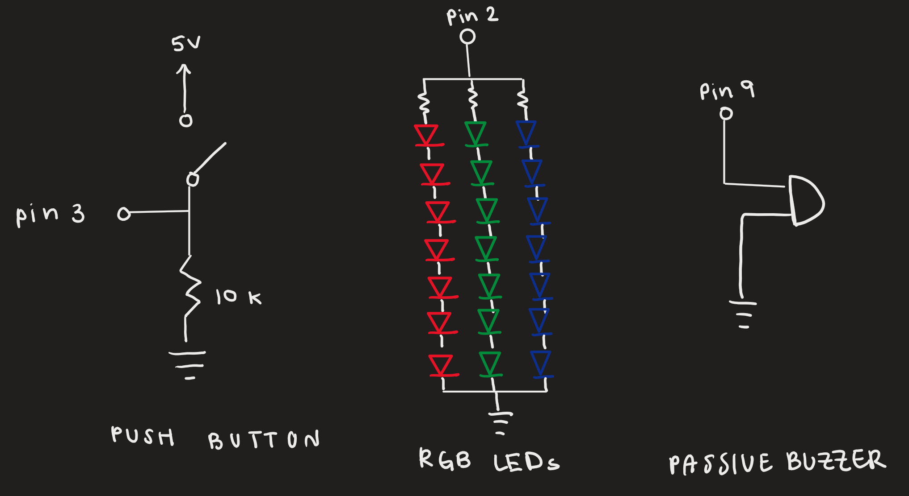
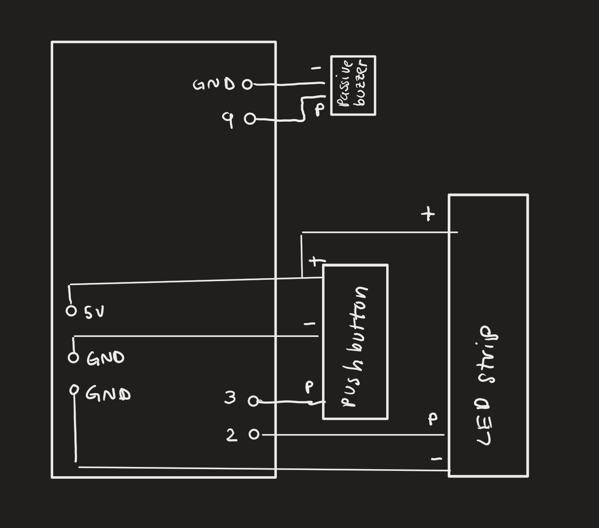

Link to Watch Final Video (with audio)
Watch the final video here!Overview
Concept: 'Ugly Christmas Sweaters’ are usually designed cheaply with the intention of only being used once. However, 92 million tonnes of textile waste are produced annually, with fast fashion contributing to 10% of CO2 emissions worldwide. I want to prototype an ‘ugly christmas sweater’ with detachable electrical components, making it easier to clean and reuse. With these design decisions, this fun tradition can be made more sustainable and less wasteful.
Reflection: Some parts of my project changed from the proposal. I ended up using a button on the tree because it was more user friendly. I also ended up not using a microcontroller because I had some soldering issues that took a while to troubleshoot, so I went with my backup plan of using an arduino uno with a small breadboard hidden inside the tree.
Technical Implementation
My project consisted of 1 button input, and 2 outputs through the RGB LED strips and a passive buzzer for audio output. For the pushbutton, I used a 10k external resistor to create a pull-down resistor. I chose this value because it is small enough to pull the input to GND but large enough that only a small current is drawn from 5V when the button is pressed. To debug my circuit, I used Serial.println statements to check the button toggle and see when it was reading HIGH or LOW. The RGB LED strips contained internal resistors, so I did not need to add any additional resistors to the circuit.

I used a small breadboard to connect all my components to the Arduino, which meant that I had to establish the positive and ground rows on the breadboard. The positive row is on the left and the ground row is on the right. The button and LED strips are connected to the breadboard.
Code
//// NeoPixel Ring simple sketch (c) 2013 Shae Erisson
#include
//buzzer library to play christmas music found here: https://github.com/hibit-dev/buzzer/blob/master/src/other/xmas/xmas.ino
//used this tutorial to set up music: https://www.hibit.dev/posts/62/playing-popular-songs-with-arduino-and-a-buzzer
#include "pitches.h"
const int ledPin = 2; // NeoPixel DIN
const int buttonPin = 3; // Button input
const int buzzerPin = 9; //Buzzer pin
#define NUMPIXELS 7 //number of LED lights
//button toggle
int buttonState = 0;//state of the button
int lastButtonState = 0;//last state of the button to check if the toggle can be turned off
bool ledOn = false;//checks if the led is on or off
// When setting up the NeoPixel library, we tell it how many pixels,
// and which pin to use to send signals. Note that for older NeoPixel
// strips you might need to change the third parameter -- see the
// strandtest example for more information on possible values.
Adafruit_NeoPixel pixels(NUMPIXELS, ledPin, NEO_GRB + NEO_KHZ800);
#define DELAYVAL 500 // Time (in milliseconds) to pause between pixels
//melodies for song (from pixels.h)
int melody[] = {
NOTE_E5, NOTE_E5, NOTE_E5,
NOTE_E5, NOTE_E5, NOTE_E5,
NOTE_E5, NOTE_G5, NOTE_C5, NOTE_D5,
NOTE_E5,
NOTE_F5, NOTE_F5, NOTE_F5, NOTE_F5,
NOTE_F5, NOTE_E5, NOTE_E5, NOTE_E5, NOTE_E5,
NOTE_E5, NOTE_D5, NOTE_D5, NOTE_E5,
NOTE_D5, NOTE_G5
};
//corresponding durations for each note of the song
int durations [] = {
8, 8, 4,
8, 8, 4,
8, 8, 8, 8,
2,
8, 8, 8, 8,
8, 8, 8, 16, 16,
8, 8, 8, 8,
4, 4
};
//
void setup() {
pixels.begin();
pinMode(buttonPin, INPUT); // Button is input using external 10k resistor
pinMode(ledPin, OUTPUT); //LED strips are output
pinMode(buzzerPin, OUTPUT); //Buzzer audio is output
Serial.begin(9600);
}
void loop() {
//Read Button
buttonState = digitalRead(buttonPin);
Serial.println(buttonState);
//Toggles button ON/OFF on button press
if (buttonState == HIGH && lastButtonState == LOW) {
ledOn = !ledOn;
delay(50);
}
lastButtonState = buttonState; //Updates button status
// If LEDs are OFF, clear and stop
if (!ledOn) {
pixels.clear();
pixels.show();
return;
}
//Clears pixels
pixels.clear();
// Cycles through pixels red/white
for(int i=0; i < NUMPIXELS; i++) {
pixels.setPixelColor(i, pixels.Color(255, 0, 0));//red
else
pixels.setPixelColor(i, pixels.Color(255, 255, 255));//white
pixels.show();
// checks if the button interupts sequence
if (checkButtonToggle()) return;
delay(DELAYVAL);
}
// Blink LEDS white 4 times
for (int b = 0; b < 4; b++) {
for (int i = 0; i < NUMPIXELS; i++)
pixels.setPixelColor(i, pixels.Color(255, 255, 255)); //white
pixels.show();
//checks if the button interupts the sequence again
if (checkButtonToggle()) return;
//Serial.println("button pressed"); debugging line
delay(300);
//LED blinks
pixels.clear();
pixels.show();
if (checkButtonToggle()) return; //checks button state again
delay(300);
}
//Changes LEDs to red and plays music
for (int i = 0; i < NUMPIXELS; i++)
pixels.setPixelColor(i, pixels.Color(255, 0, 0)); //red
pixels.show();
// Play the song, code from https://github.com/hibit-dev/buzzer/blob/master/src/other/xmas/xmas.ino
int size = sizeof(durations) / sizeof(int);
for (int note = 0; note < size; note++) {
//to calculate the note duration, take one second divided by the note type.
//e.g. quarter note = 1000 / 4, eighth note = 1000/8, etc.
int duration = 1000 / durations[note];
tone(buzzerPin, melody[note], duration);
//to distinguish the notes, set a minimum time between them.
//the note's duration + 30% seems to work well:
int pauseBetweenNotes = duration * 1.30;
delay(pauseBetweenNotes);
//stops the song from playing
noTone(buzzerPin);
// allow turning button off during song
if (checkButtonToggle()) {
noTone(buzzerPin);
return;
}
}
//button state is now low
buttonState = LOW;
}
//checks if button is pressed
bool checkButtonToggle() {
int reading = digitalRead(buttonPin);
//Serial.println(reading); debugging line
if (reading == HIGH && lastButtonState == LOW) {
ledOn = !ledOn;
delay(50);
lastButtonState = reading;
return true;
}
lastButtonState = reading;
return false;
}
Technical Write Up
To implement this project, I used an Arduino Uno powered by a 9V battery, but used the 5V pin to power the components. These components were a pushbutton connected to Pin 3, an RGB LED strip with 7 LEDs connected to Pin 2, and a passive buzzer connected to pin 9. I also used a small breadboard to connect all the components to the Arduino and hid them behind the tree, with the push button popping out of a small slit in the felt. To connect the LEDs, I was hoping to be able to stagger them vertically, but was not able to because soldering to LEDs was more difficult than anticipated (the solder broke off 2 times). Instead, I used the part of the LEDs that had wire connections. In the future, I would want to use a 3 pin LED splice solderless connector to conenct the staggered LEDs. All 3 components are independently wired. The arduino, battery, and passive buzzer are hidden in a small pocket sewn on to the sweater panel. For the code, I used 2 different libraries: Adafruit NeoPixel library to control the RGB LED strips, and a buzzer library to play Christmas music, which I linked in the code. These were both relatively simple to implement, but it is important to note that the Neopixel library code expects the LEDs to be connected to a sequence and the number of pixels need to be defined. With the delays in the code, sometimes the button needs to be pressed multiple times to properly turn off the LED and music display. Lastly, the tree is a separate piece attached to the sweater with buttons so the sweater itself can be washed easily.